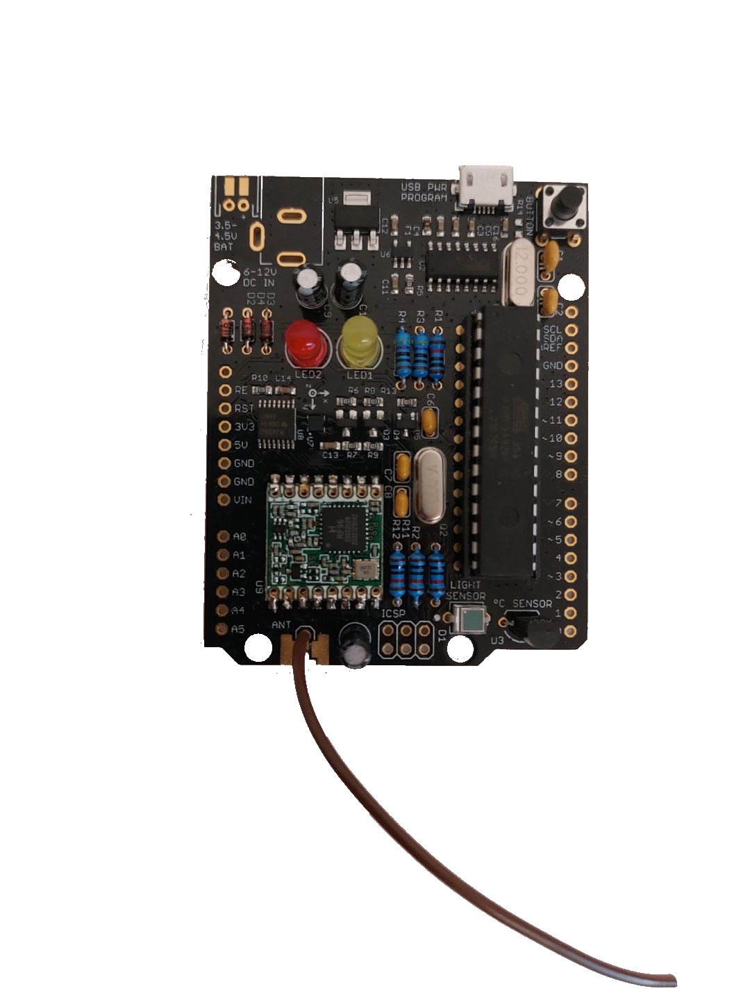
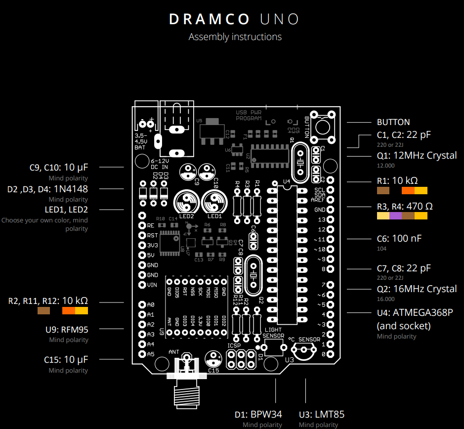

Dramco Uno
Les 1
In les 1 hebben we een Dramco Uno gesoldeerd, we hebben heel wat elektronische componenten toegevoegd. Deze moesten we dan op specifieke plaatsen, heel nauwkeurig solderen. Zodat we deze later konden programmeren. Er staan heel wat weerstanden op, maar ook sensoren, zoals een temperatuurvoeler of een lichtsensor. Er zijn ook lampjes aanwezig en een drukknop. Er is ook een LoRa module aanwezig om signalen door te sturen naar de Cloud.
Dit is een foto van een dramco uno dat we zelf gesoldeerd hebben in de les

Dit is het schema van de Dramco Uno met de componenten die we gerbuik hebben
